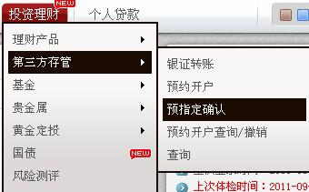

网上自助开户问题答疑
问：网上自助开户现时可办理新开A股账户吗？
答：我司计划分两阶段开展网上自助开户业务：第一阶段（现阶段）使用第三方数字证书实现资金账户、基金账户、理财账户的网上开立及已开通A股证券账户的网上登记；第二阶段使用中登下发的数字证书实现A股证券账户的网上开立及证券业务的网上办理。
问：网上自助开户需要链接VPN吗？
问：网上自助开户需准备什么设备和材料？
答：本人身份证明文件、摄像头、音响、麦克风、支持网络视频通话的宽带、广发银行借记卡。
问：网上自助开户如何确认开发关系人？
答：按发文通知，网上自助开户客户归属原则上为自然增长客户，如需对此类客户开发关系进行调整，按现行制度另起流程申请变更。客户开发关系调整在金管家系统进行，请营业部做好预约报备、客户签字确认和回访等方式进行客户开发关系确认管理。后续分公司会继续建议总公司增加“开发关系人/推荐人”一栏。
建议确认开发关系人流程为：开发人员上门服务前先跟营业部预约好，服务过程中签好客户确认单，并由营业部进行电话回访客户，话术参考“是否是由XXX开发人员进行推荐开户的？请注意定期修改密码并妥善保管”，而后在营业部金管家系统调整客户开发关系。
问：营业部如何查看通过网上自助开户的客户？
答：目前平台未开放营业部查询功能，只能通过分公司视频见证人员/复核人员受理后告知相关营业部。现时生产环境网址并未挂上广发网，营业部寻找合适客户后可直接使用生产环境进行开户。
问：网上自助开户的客户是否就完全电子化管理，不用建立客户个人档案了吗？没有实质资料了？
答：网上自助开户选用电子签约方式，无纸质文档，但仍建议网上开户建立客户个人档案袋（可打印身份证入袋），可标识为网上开户，方便客户以后办理后续业务。
问：网上自助开户的客户还需要扫描吗？
答：第一阶段（现阶段）只涉及下挂股东卡，暂时不需要考虑到中登扫描的问题。至于一柜通，经纪业务部给出的答复是：因无纸质档案，暂时不需要理会开户文本协议等扫描项。经纪业务总部正在和结算部、IT部门协商处理。
问：网上自助开户佣金如何调整？
答：网上自助开户客户佣金设置流程具体参照现有见证开户客户佣金设置流程。如果由营销人员上门服务，可携带佣金表进行签名确认调整。亦可选择临柜办理或电话录音调整。
问：网上自助开户见证、复核权限如何配置？
答：现有单人视频见证人员、复核人员自动获得网上自助开户视频见证、复核权限，系统初始密码为：123123。
问：网上自助开户可开通的三方存管银行有哪些？
答：网上自助开户现时只能预指定广发行三方，客户再在网上银行签约（要求客户已开通广发行网银），如下图所示：

问：网上自助开户证书安装不成功，提示“请先阅读完协议并勾选同意”？
答：需先安装控件，在大概地址栏的下方会有提示安装控件的，然后再点击上一步并继续流转就行。